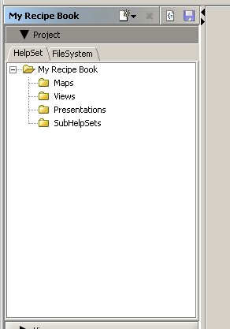
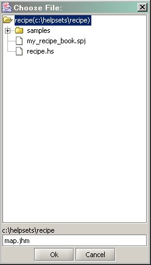
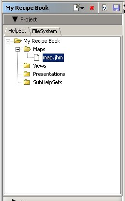
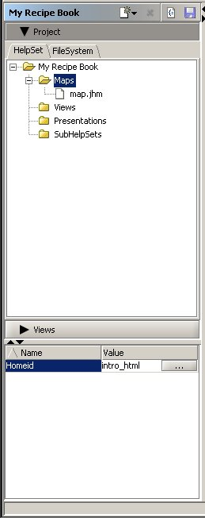

Now we will add a map to our project.
To add , we go to the HelpSet tab.
- Go to the HelpSet tab.
- 
- Click the
 button in the toolbar, and select the "New Map" item.
button in the toolbar, and select the "New Map" item. - Enter a new map file name in the textarea at the bottom. [map.jhm]
- 
- Click on "Ok".
- A dialog will ask whether to populate the map automatically. Choose "Yes".
Choosing "Yes" add entries for all files in the map file and generates appropriate ids for them. - The map file will be added to the helpset under "Maps" node. You will see the Map Editor in the Viewer panel..
- 
-
Add a Home ID.
- Select the "Maps" node. In the Properties panel, there is a home id field.
- Click on the Value column of the field to edit the value. You can use the button to activate the Target Chooser dialog and select a target. You can also enter a id Name manually.[intro_html]
- 